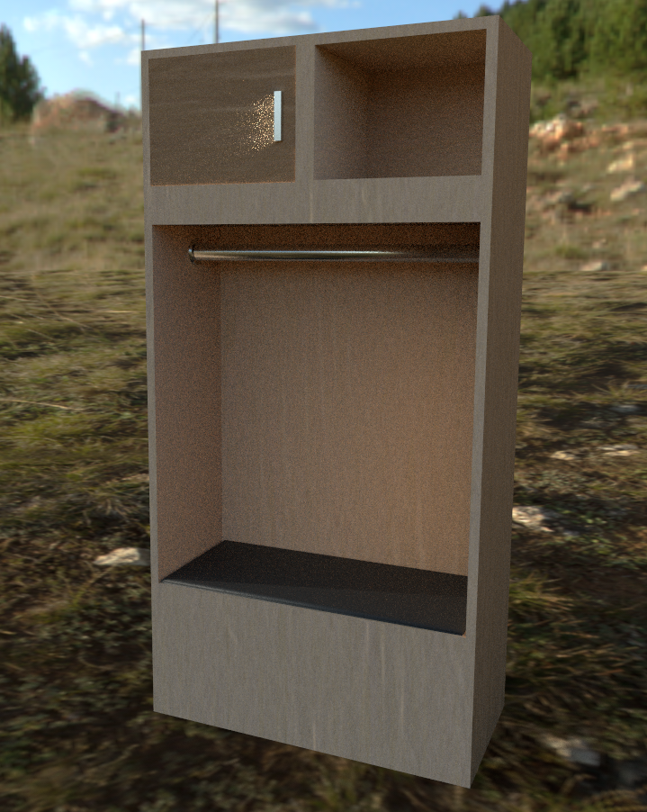
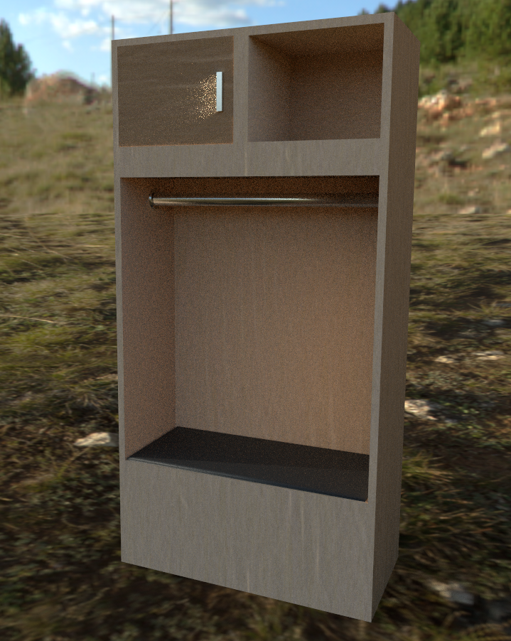

This week our focus is on making the Quest work with the networking setup and improving the P2P information transfer to ensure the networking is running effectively and smoothly. Secondly, we are working bug testing ensuring we minimize the amount errors that occur during gameplay.
Daoyi - Multiplayer
Rewrite the Net logic for porting on quest. Work with Terrell to build and run demos with networking connection on the Quest -- although still have some compatitive issue. With Stephen, refine and fix the calculation for determing hitting behaviors. Next week: test multiplayer on quest, tweak some net parameters (package update rate etc). Most importantly adding game mechniques for multiplayer.
Stephen - Network and Ball physics
Work with Daoyi to determine the changes that need to be made to the code base to ensure a singular working game across the Rift and the Quest. The major focus of this portion is how we are going to get the ball physics calculations to handled across the machines in a P2P manner while respecting the latency that we will inevitably face with the non-corded Quest. Once these bugs are handled I will work with Terrell to make sure we have smooth transitions between scenes and put the finishing touches on the gameplay mechanics.
Andrew - Assets
This week I continued to work on the character that I had previously modeled. It is now rigged with usable skinweights that will work well enough for us in the upcoming demo. To continue with that, I will create some pitching animations to replace our ball shooter in singleplayer mode and begin to test hand ik for the character using the VR controllers.
In addition to the character, I have also been working on assets to make the experience look more varied. For our zombie game mode, I have modeled and textured a grenade for us to use in place of the baseball. In addition for the previously mentioned locker room menu in the works, I have created a base locker, for which game modes will be selectable from.
 

I have also integrated the zombie animations and models that we have, which replace the green capsules that we had standing in for them. Next step for zombie mode will be to make sure that the explosions work correctly, and to adjust the lighting on the field so that it looks spookier.
Andrew - Plans for next week
For next week the main concerns are to get the zombie and home run derby modes working correctly, which are our top priorities. After that will be getting the locker room start scene in order so we have a clean entry point to the game.